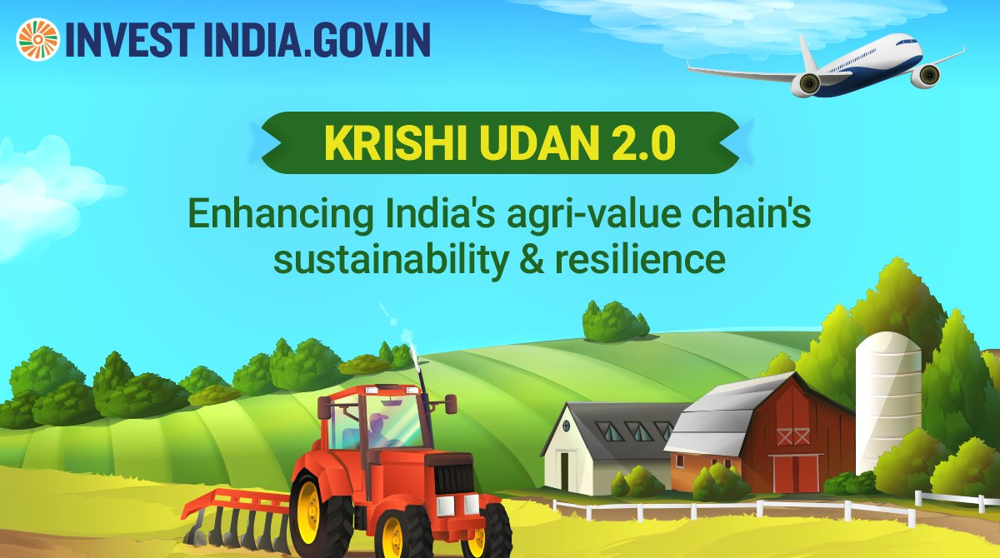

Krishi Udan Scheme 2.0 was announced on 27 October 2021 mainly focusing on transporting perishable food products from the hilly areas, North Eastern States and tribal areas.
Krishi Udan Scheme:
To facilitate the marketing of agricultural and farm products of the northeastern states outside the region, the Airports Authority of India (AAI) has launched the ‘Krishi-Udan Scheme’.
• The scheme has been implemented in the region very successfully.
• The government released Krishi UDAN 2.0 in October 2021.
• The government will add 21 more airports under the Krishi Udan scheme, as per the latest reports of Feb 2023.
Krishi Udan Scheme Objectives:
The objective of the Krishi Udan scheme was to provide assistance to the farmers with respect to the transport of agricultural products so that they will be able to get the value realization for their products.
• The Krishi UDAN 2.0 focuses on the transportation of perishable food products from north-eastern states, hilly states, and tribal regions.
• The scheme will focus on addressing the long-standing problem of the wastage of agricultural products.
• The other objective is to penetrate deeper into the hinterland and to be able to provide value, especially for perishable commodities.
Eligibility primarily includes farmers, cooperatives, producer organizations, and other stakeholders involved in the agricultural supply chain. The scheme is designed to support the logistics of agricultural products.
The scheme supports the air transportation of various perishable agricultural products, including fruits, vegetables, flowers, and other agricultural produce that require quick delivery to markets.
Farmers can benefit through reduced logistics costs, increased market access, and enhanced competitiveness by ensuring that their products reach consumers quickly, thereby minimizing spoilage.
The scheme provides financial support for the transportation costs incurred during the airlift of agricultural products, offering subsidies to eligible stakeholders to make air transport more affordable.
Farmers and organizations can apply through the Ministry of Civil Aviation or designated state agencies by submitting the necessary application forms and supporting documents as specified in the scheme guidelines.
Yes, the benefits are usually available within specified periods during the harvest season or as per the annual plan set by the implementing agencies.
krishi Udan scheme
Krishi Udan scheme was to provide assistance to the farmers with respect to the transport of agricultural products so that they will be able to get the value realization for their products.
READ
krishi Udan scheme
Krishi UDAN 2.0 will be implemented at 53 airports across the country, primarily focussing on the north-eastern States and tribal regions, and is expected to benefit farmers, freight forwarders, and airlines.
READ
krishi Udan scheme
Krishi UDAN 2.0 this scheme is launched with the vision of doubling the farmers’ income in near future. The government is putting a lot of effort to develop the agriculture sector.
READ